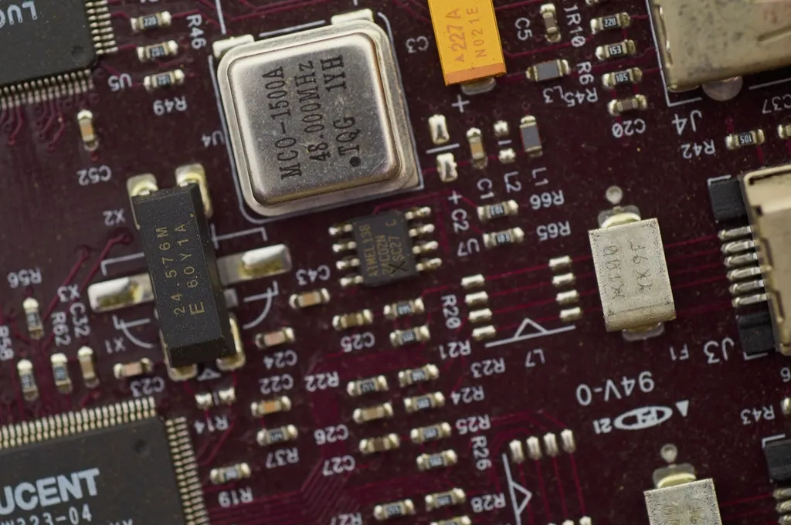

An advanced understanding of artificial intelligence and data-driven technologies
Dual Master Degree program
Master of Science inArtificial Intelligence
The Master of Science in Artificial Intelligence at the Helvetic Institute of Technology is designed for students who want to develop advanced knowledge and practical expertise in artificial intelligence and data-driven technologies.
Students engage with key areas such as machine learning, neural networks, and data analysis, while developing the ability to design, evaluate, and implement AI-driven solutions.
Duration2 years
Credits90 CH | 120 ECTS
Program overview
Master of Science inArtificial Intelligence
The program focuses on both technical depth and real-world application, preparing students to work with complex AI systems and evolving digital environments.
The learning approach combines academic rigor with hands-on projects, ensuring that students can apply their knowledge in practical contexts.
- Helvetic Tech degree
- Master of Science in Artificial Intelligence
- TU degree
- Master of Science in Artificial Intelligence

Program learning outcomes
Program learningoutcomes
The ability to design and evaluate AI-based solutions
Knowledge of machine learning, neural networks, and data science
Analytical and problem-solving skills in complex technology-driven environments
Practical experience through applied projects and real-world case studies
Curriculum outline
Curriculumoutline
3 study stages across the master program.
Core concepts
Data science · Statistical methods · System design principles
Advanced AI
Machine learning · Neural networks
Applied learning
Core courses · Electives · Final capstone project
Career opportunities
Careeropportunities.
Roles graduates can target with this master degree.
- Machine Learning Engineer
- Data Scientist
- AI Engineer
- Computer Vision Engineer
- AI Consultant
Start your application